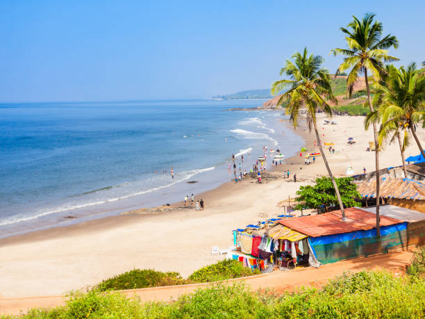
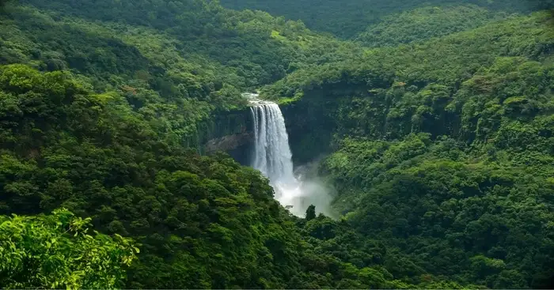
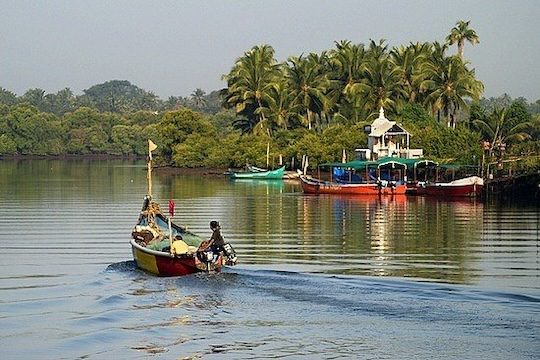
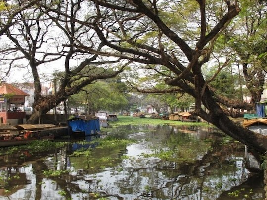
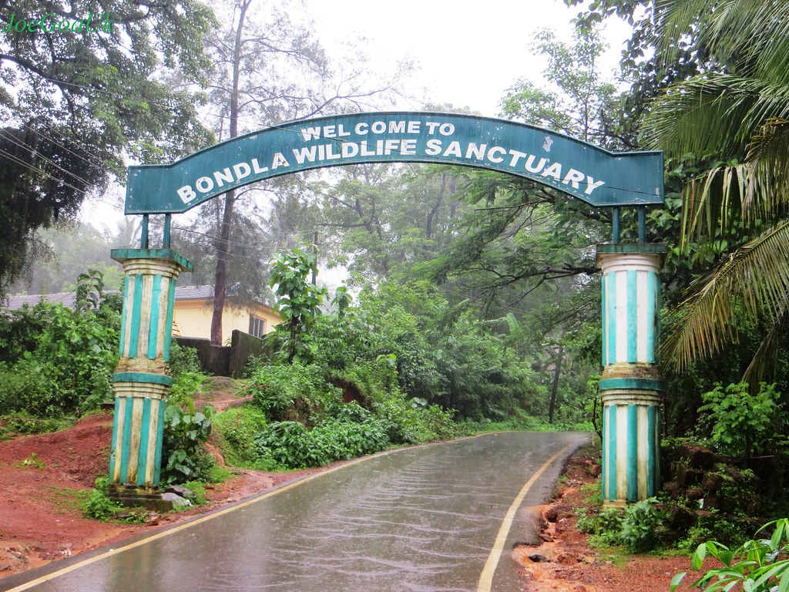

GLANCE OF GOA
Tourism in Goa
Tourism is generally focused on the coastal areas of Goa, with lower tourist activity
inland. In 2010, there were more than 2 million tourists reported to have visited Goa,
about 1.2 million of whom were from abroad. As of 2013, Goa was a destination of
choice for Indian and foreign tourists, particularly Britons and Russians, with
limited means who wanted to vacation outside of their countries. The state was hopeful
that changes could be made which would attract a more upscale demographic.
Goa stands 6th in the Top 10 Nightlife cities in the world in National Geographic
Travel. Notable nightclubs in Goa include Chronicle, Mambos and Sinq.
One of the biggest tourist attractions in Goa is water sports. Beaches like Baga and
Calangute offer jet-skiing, parasailing, banana boat rides, water scooter rides, and
more. Patnem beach in Palolem stood third in CNN Travel's Top 20 Beaches in Asia.
Over 450 years of Portuguese rule and the influence of the Portuguese culture presents
to visitors to Goa a cultural environment that is not found elsewhere in India. Goa is
often described as a fusion between Eastern and Western culture with Portuguese culture
having a dominant position in the state be it in its architectural, cultural or social
settings. The state of Goa is famous for its excellent beaches, churches, and temples.
The Bom Jesus Cathedral, Fort Aguada and a new wax museum on Indian history, culture
and heritage in Old Goa are other tourism destinations.
1. Beaches in Goa

The state of Goa, in India, is famous for its beaches. Tourism is its primary
industry, and is generally focused on the coastal areas of Goa, with decreased
tourist activity inland. Goa's beaches cover about 125 kilometres (78 mi) of its
coastline. These beaches are divided into North and South Goa.
To know further click here.
2. Religious and Historic Places in Goa
 Goa has one World Heritage Site: the Bom Jesus Basilica with churches and convents
of Old Goa. The basilica holds the mortal remains of Francis Xavier, regarded by
many Catholics as the patron saint of Goa (the patron of the Archdiocese of Goa is
actually Saint Joseph Vaz). These are both Portuguese-era monuments and reflect a
strong European character. The relics are taken down for veneration and for public
viewing, per the prerogative of the Church in Goa, not every ten or twelve years as
popularly thought and propagated. The last exposition was held in 2014.
Goa has one World Heritage Site: the Bom Jesus Basilica with churches and convents
of Old Goa. The basilica holds the mortal remains of Francis Xavier, regarded by
many Catholics as the patron saint of Goa (the patron of the Archdiocese of Goa is
actually Saint Joseph Vaz). These are both Portuguese-era monuments and reflect a
strong European character. The relics are taken down for veneration and for public
viewing, per the prerogative of the Church in Goa, not every ten or twelve years as
popularly thought and propagated. The last exposition was held in 2014.
Goa has the Sanctuary of Saint Joseph Vaz in Sancoale. Pilar monastery which holds
novenas of Venerable Padre Agnelo Gustavo de Souza from 10 to 20 November yearly.
There is a claimed Marian apparition at the Church of Saints Simon and Jude at Batim,
Ganxim, near Pilar, where Goans and non-resident Goans visit. There is the statue
of the bleeding Jesus on the Crucifix at the Santa Monica Convent in Velha Goa. There
are churches (Igorzo), like the baroque styled Nixkollounk Gorb-Sombhov Saibinnich
Igorz (Church of the Our Lady of Immaculate Conception) in Panaji, the Gothic styled
Mater Dei (Dev Matechi Igorz/ Mother of God) church in Saligao and each church having
its own style and heritage, besides Kopelam/ Irmidi (chapels).
The Velhas Conquistas regions are known for Goa-Portuguese style architecture. There
are many forts in Goa such as Tiracol, Chapora, Corjuem, Aguada, Reis Magos, Nanus,
Mormugao, Fort Gaspar Dias and Cabo de Rama.
In many parts of Goa, mansions constructed in the Indo-Portuguese style architecture
still stand, though, in some villages, most of them are in a dilapidated condition.
Fontainhas in Panaji has been declared a cultural quarter, showcasing the life,
architecture and culture of Goa. Influences from the Portuguese era are visible in
some of Goa's temples, notably the Shanta Durga Temple, the Mangueshi Temple, the
Shri Damodar Temple and the Mahalasa Temple. After 1961, many of these were demolished
and reconstructed in the indigenous Indian style.
To know further click here.
3. Waterfalls in Goa

From the sun-drenched beaches to the little secluded islands, Goa is filled with nature's
unique gifts, and the stunning waterfalls in Goa add to its beauty. It has the milky
Dudhsagar Waterfalls, the gorgeous Tambadi Surla Waterfalls, the silvery Hivre Waterfalls
and many other that attract tourists and travelers. Let the soothing music of these
waterfalls take you to a world where all your worries melt away and revive your soul.
Even though there are so many scenic places that you can visit to get the best of nature
in Goa, this list of waterfalls will help you have a soothing holiday amid the serene
vibes around! All of these watferfalls offer the best opportunities for one to enjoy
a relaxing and refreshing vacation.
To know about some famous waterfalls in Goa click here.
4. Lakes and Rivers in Goa
|  |  |
In Goa there are nine large rivers, all of them flow out Western Ghat and flow into
the Arabian Sea. 42 smaller tributaries join them, forming a large system of inland
waters of Goa called here "backwaters".
The biggest rivers are Sal, Tiracol, Chapora, Baga, Mandovi, Zuari, Saleri, Talpona,
Galgibaga. Among them only basins of the rivers Mandovi and Zuari occupy the area of
2553 square kilometers that makes about 70% of the general geographical zone of Goa.
The navigable rivers of Goa with a general length of 253 km are the main blood vessels
of the state and the integral part of its life.
To "backwaters" system of Goa belong also some large and great numbers of small lakes.
The best known are Mayem, Carmbolim, Cutorim.
For tourists "backwaters" of Goa offer an unforgettable adventure in the form of cruise
by the boat. So-called houseboats are widespread in this part of India. These are the
real floating houses; there are bedrooms with a bathroom, living room and all necessary
rooms, including office for crew. These vessels have very original structure. They are
produced from a tree of anjili and only natural materials as a bamboo and palm leaves.
The houseboat is constructed without nails and other metal holding elements.
Many local and foreign travel agencies offer cruises on houseboats on water channels
of Goa which can last from several hours to one day. For tourists there are various
arrangements onboard.
Such excursions are ideal opportunity to communicate with real local residents from
near villages or with tribes occupying the deep jungle, and to spend some time in an
unusual situation among the tropical nature. In the rivers of Goa lives incalculable
quantity of bird species. Some manage to observe the crocodiles. The opportunities for
fishing are improbable, and then the personnel may cook your catch at your desire and
taste. Also there are romantic dinners and nights in the floating house.
5. Wildlife in Goa

Forest cover in Goa is diverse. Goa is India's smallest state terms of area and the
fourth smallest in terms of population. Goa is located on the west coast of India
in the region known as the Konkan Forest cover in Goa stands at 1,424 km sq, most of
which is owned by the government. Government owned forest is estimated at 1224.38 km sq
whilst private is given as 200 km sq. Most of the forests in the state are located in
the interior eastern regions of the state. The Western Ghats, which form most of eastern
Goa, have been internationally recognised as one of the biodiversity hotspots of the
world. In the February 1999 issue of National Geographic Magazine, Goa was compared
with the Amazon and Congo basins for its rich tropical biodiversity.
Nanda Lake is the first and the only Ramsar wetland site in Goa. Goa's state animal
is the Gaur, the state bird is the Ruby-throated yellow Bulbul, which is a variation
of Black-crested Bulbul, and the state tree is the Matti.
The important forests products are bamboo canes, Maratha barks, chillar barks and
the bhirand. Coconut trees are ubiquitous and are present in almost all areas of
Goa barring the elevated regions. Much deciduous vegetation, including teak, sal,
cashew and mango trees, is present. Fruits include jackfruits, mangos, pineapples
and blackberries.
Foxes, wild boars and migratory birds are found in the jungles of Goa. The avifauna
includes kingfishers, mynas and parrots. Numerous types of fish are also caught off
the coast of Goa and in its rivers. Crabs, lobsters, shrimps, jellyfish, oysters and
catfish form some of the piscine catch. Goa also has a high snake population, which
keeps the rodent population in control. Goa has many famous National Parks, including
the renowned Salim Ali bird sanctuary.
Goa has more than 33% of its geographic area under government forests (1224.38 km sq)
of which about 62% has been brought under Protected Areas (PA) of Wildlife Sanctuaries
and National Park. Since there is a substantial area under private forests and a large
tract under cashew, mango, coconut, etc. plantations, the total forest and tree cover
constitutes 56.6% of the geographic area.
To know more about sanctuaries in Goa click here.